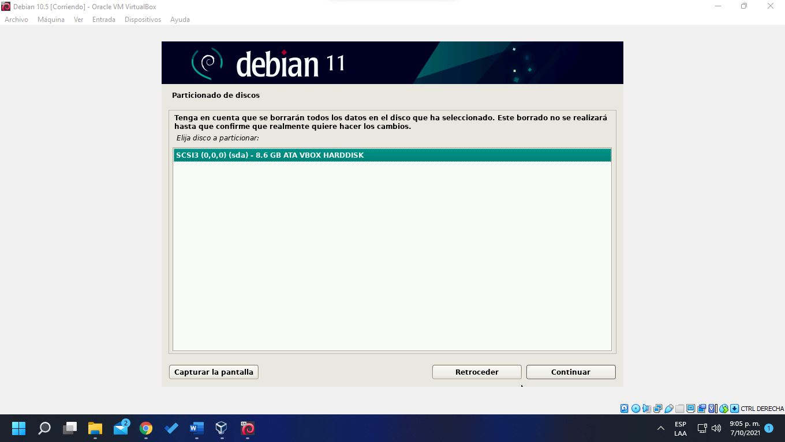
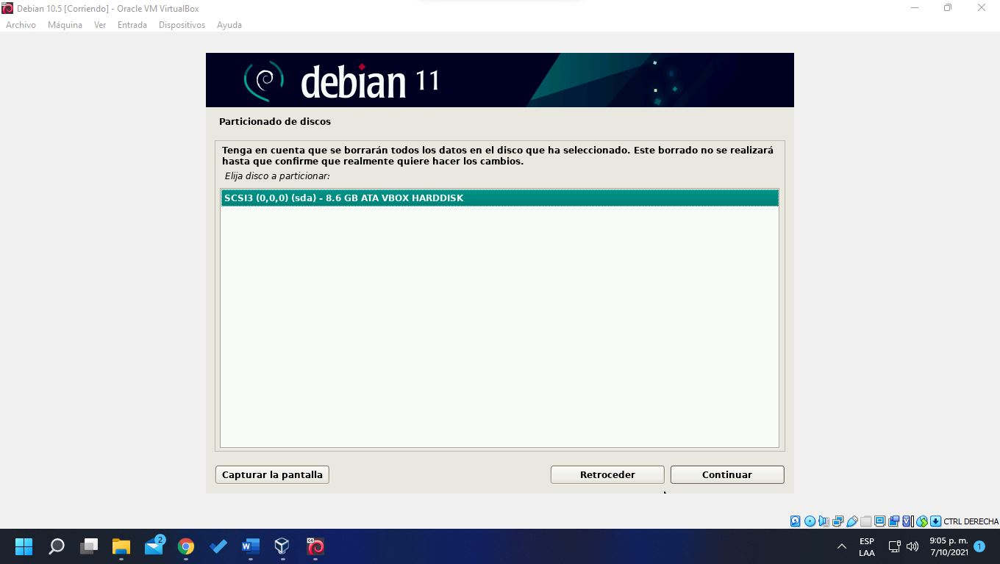
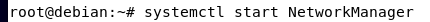
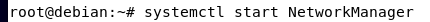
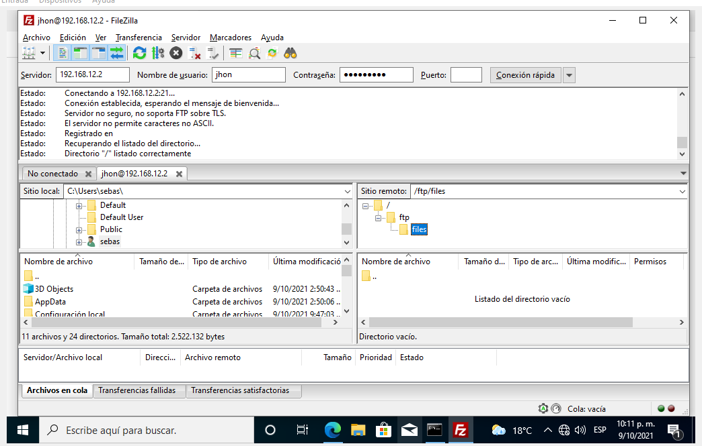

Pasos De Instalación Debian 11
Recursos utilizados:
- ISO Debian 11
- Oracle VM VirtualBox
Indice:
- 1. Instalar Debian 11 en VirtualBox
- 2. Configuración IP Estatica
- 3. Instalación y Configuración DHCP
- 4. Instalación y Configuración DNS (Bind9)
- 5. Instalación y Configuración Servidor Web (Apache2)
- 6. Instalación y Configuración Servidor Servidor FTP (vsFTP)
- 7. Instalación y Configuración Servidor Correo (Postfix, Dovecot y ThunderBird)
1. Instalar Debian 11 en VirtualBox
 

2. Configuración IP Estatica
3. Instalación y Configuración DHCP
a. Instalación DHCP
b. Configuración DHCP
4. Instalación y Configuración DNS (Bind9)
a. Configuración DNS (Bind9)

 

5. Instalación y Configuración Servidor Web (Apache2)
6. Instalación y Configuración Servidor Servidor FTP (vsFTP)
a. Instalación Servidor Servidor FTP (vsFTP)
b. Configuración Servidor Servidor FTP (vsFTP)
c. Usuario Sebastian exento del chroot
d. Agregar usuario jhon (restringido chroot)
e. Creando carpetas y estableciendo permisos de escritura
7. Instalación y Configuración Servidor Correo (Postfix, Dovecot y ThunderBird)
a. Instalación Postfix